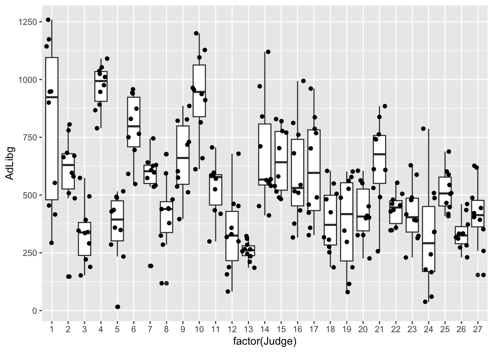

Chapter 6 Linear models
Linear models is a general term for models with a single univariate response (dependent variable - \(y\) in the formula below), which we want to describe using one or several predictors (independent variables - \(x\) in the formula below).
\[ y = a + b \cdot x + e \] Here the informative parameter is the slope (\(b\)) which indicates the relation between \(x\) and \(y\). (\(e\) is the missfit / residuals of the model).
We use tidyverse coding as this makes life much easier. As an tidyverse add on, we use broom for the linear models, broom.mixed and lme4 for the linear mixed models.
library(ggplot2) # lets plot dadta
library(tidyverse)
library(broom)
library(broom.mixed)
library(lme4)
library(ggpubr) # lets add stats to the plots
library(knitr) # lets make nice tablesThe data is already imported, and formated (see Getting_data_in.pdf for details). We simply load this file.
6.1 Example
As response variable, the amount of Consumption of Pasta with mushrooms and use the likert scale I like the taste of pasta with mushrooms! as predictor. We use ONLY Day 1 results.
First a plot:
Buffet_survey %>%
filter(str_detect(StationName,'mush')) %>%
filter(Day==1) %>%
ggplot(data = ., aes(`I like the taste of pasta with mushrooms! `,Consumption)) +
geom_point() +
stat_smooth(method = lm, se = F)## `geom_smooth()` using formula 'y ~ x'It seems as there is something. So lets build a linear model on this
# subset the data
x <- Buffet_survey %>%
filter(str_detect(StationName,'mush')) %>%
filter(Day==1)
mdl <- lm(data = x, Consumption~`I like the taste of pasta with mushrooms! `)
mdl ##
## Call:
## lm(formula = Consumption ~ `I like the taste of pasta with mushrooms! `,
## data = x)
##
## Coefficients:
## (Intercept) `I like the taste of pasta with mushrooms! `
## -186.28 50.21summary(mdl)##
## Call:
## lm(formula = Consumption ~ `I like the taste of pasta with mushrooms! `,
## data = x)
##
## Residuals:
## Min 1Q Median 3Q Max
## -113.19 -68.98 12.81 35.02 170.81
##
## Coefficients:
## Estimate Std. Error t value Pr(>|t|)
## (Intercept) -186.28 195.41 -0.953 0.358
## `I like the taste of pasta with mushrooms! ` 50.21 30.35 1.655 0.122
##
## Residual standard error: 83.66 on 13 degrees of freedom
## Multiple R-squared: 0.174, Adjusted R-squared: 0.1104
## F-statistic: 2.738 on 1 and 13 DF, p-value: 0.1219The the slope indicates that by increasing liking by one unit the consumption increase is \(50.2 \pm 30.4\), however, this apparent effect is not statistically significant (\(p = 0.12\)).
6.2 Run a bunch of models at once
We want to model consumption of both pasta with mushrooms andd legumes, and look at all the likert scales questions as predictors. Further we want to do this for both days.
6.2.1 A plot
Surveylong_buffet %>%
filter(!is.na(StationName )) %>%
mutate(question2 = question %>% substr(1,34)) %>% # The label is to long, so lets just represent the first 30 letters.
ggplot(data = ., aes(answnum,Consumption, color = factor(Day))) +
geom_point() +
stat_smooth(se = F, method = lm) +
stat_cor() +
facet_grid(question2 ~ StationName) +
theme_bw() + theme(legend.position = 'bottom')## `geom_smooth()` using formula 'y ~ x'
This we similary can run as several linear models.
tb <- Surveylong_buffet %>%
filter(!is.na(StationName )) %>%
group_by(StationName,question,Day) %>%
do(lm(data = ., Consumption~answnum) %>% tidy(conf.int = T))
tb %>%
filter(term=='answnum') %>%
select(-statistic) %>%
kable(x = .,caption = 'All linear models', digits = 2)| StationName | question | Day | term | estimate | std.error | p.value | conf.low | conf.high |
|---|---|---|---|---|---|---|---|---|
| Pasta with legumes | I like the taste of pasta with legumes! | 1 | answnum | 28.79 | 13.48 | 0.05 | -0.33 | 57.91 |
| Pasta with legumes | I like the taste of pasta with legumes! | 2 | answnum | 39.55 | 14.94 | 0.02 | 7.27 | 71.83 |
| Pasta with legumes | I like the taste of pasta with mushrooms! | 1 | answnum | 16.63 | 30.22 | 0.59 | -48.66 | 81.92 |
| Pasta with legumes | I like the taste of pasta with mushrooms! | 2 | answnum | 55.27 | 36.68 | 0.16 | -23.97 | 134.52 |
| Pasta with legumes | Pasta with legumes is visually appealing to me. | 1 | answnum | 24.01 | 12.43 | 0.08 | -2.84 | 50.85 |
| Pasta with legumes | Pasta with legumes is visually appealing to me. | 2 | answnum | 15.07 | 20.01 | 0.46 | -28.16 | 58.30 |
| Pasta with legumes | Pasta with mushrooms is visually appealing to me. | 1 | answnum | 11.05 | 21.12 | 0.61 | -34.57 | 56.67 |
| Pasta with legumes | Pasta with mushrooms is visually appealing to me. | 2 | answnum | -3.17 | 31.07 | 0.92 | -70.28 | 63.95 |
| Pasta with mushroom | I like the taste of pasta with legumes! | 1 | answnum | 21.16 | 16.07 | 0.21 | -13.57 | 55.89 |
| Pasta with mushroom | I like the taste of pasta with legumes! | 2 | answnum | -10.36 | 12.41 | 0.42 | -37.16 | 16.44 |
| Pasta with mushroom | I like the taste of pasta with mushrooms! | 1 | answnum | 50.21 | 30.35 | 0.12 | -15.35 | 115.77 |
| Pasta with mushroom | I like the taste of pasta with mushrooms! | 2 | answnum | 11.36 | 27.13 | 0.68 | -47.25 | 69.98 |
| Pasta with mushroom | Pasta with legumes is visually appealing to me. | 1 | answnum | 23.94 | 13.89 | 0.11 | -6.07 | 53.95 |
| Pasta with mushroom | Pasta with legumes is visually appealing to me. | 2 | answnum | -9.25 | 13.81 | 0.51 | -39.08 | 20.58 |
| Pasta with mushroom | Pasta with mushrooms is visually appealing to me. | 1 | answnum | 21.77 | 22.51 | 0.35 | -26.86 | 70.40 |
| Pasta with mushroom | Pasta with mushrooms is visually appealing to me. | 2 | answnum | -12.67 | 21.06 | 0.56 | -58.17 | 32.83 |
.. A plot of these results for a quick interpretation.
tb %>%
filter(term=='answnum') %>%
ggplot(data = ., aes(question,estimate,ymin = conf.low, ymax = conf.high, color = factor(Day))) +
geom_errorbar(width = 0.1, position = position_dodge()) +geom_point()+
geom_hline(yintercept = 0) +
coord_flip() +facet_grid(~StationName) +
theme(legend.position = 'bottom')
Seems as some of the legume consumptions there is a significant association with likert scales. Not as strong for consumption of mushrooms.